Self-hosted and keyless. Live aircraft, ships and satellites fused on one globe, with history nobody can paywall.
Aircraft, vessels, satellites, hazards and infrastructure land in one 3D view and are correlated on the server, so you stop eyeballing six browser tabs. Core feeds need no account and no API key.
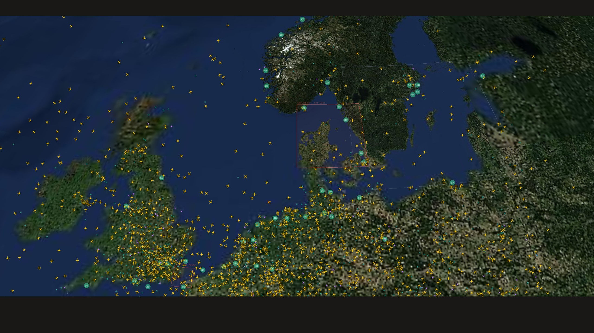
Live · the North Sea and Baltic, one second of the feedADS-B from OpenSky and airplanes.live, including around 140 military aircraft. Busy days peak far higher; the 21,186 above was one measured snapshot.
Keyless AIS, MMSI-deduplicated across ShipXplorer, MyShipTracking and Nordic public feeds. 55,086 in the same measured peak.
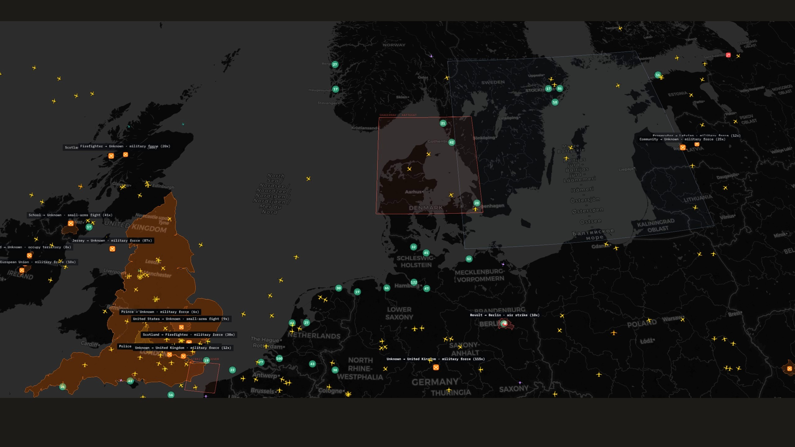
CelesTrak two-line elements propagated with real SGP4 physics in your browser, not a decorative orbit animation.
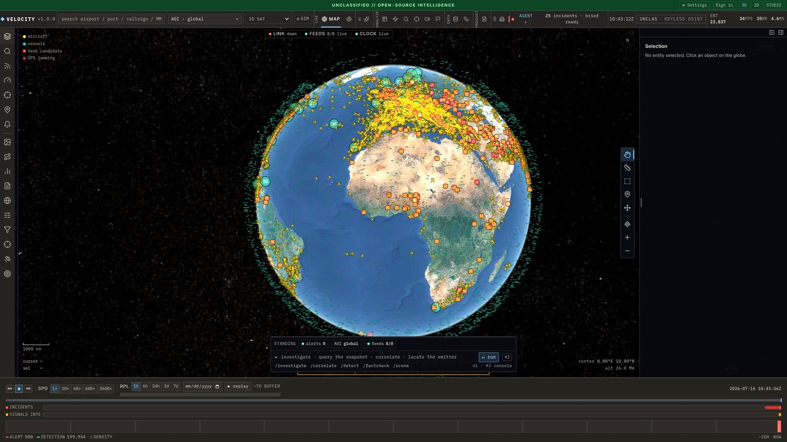
Earthquakes, wildfires, storms, volcanic activity and power outages, on the same timeline as the traffic that has to route around them.
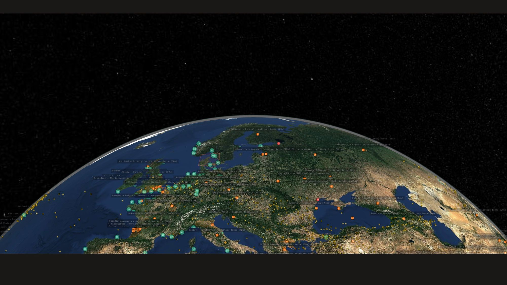
GPS jamming inferred from ADS-B position-accuracy degradation, aggregated into cells you can click and query.
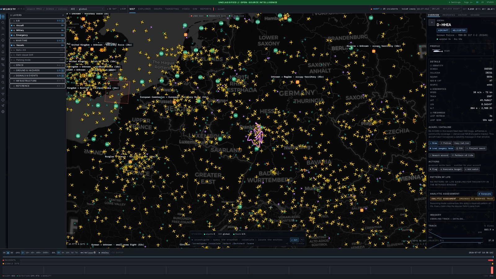
7,183 military bases, 3,804 ports, submarine cables and per-country reference layers, searchable next to the live picture.
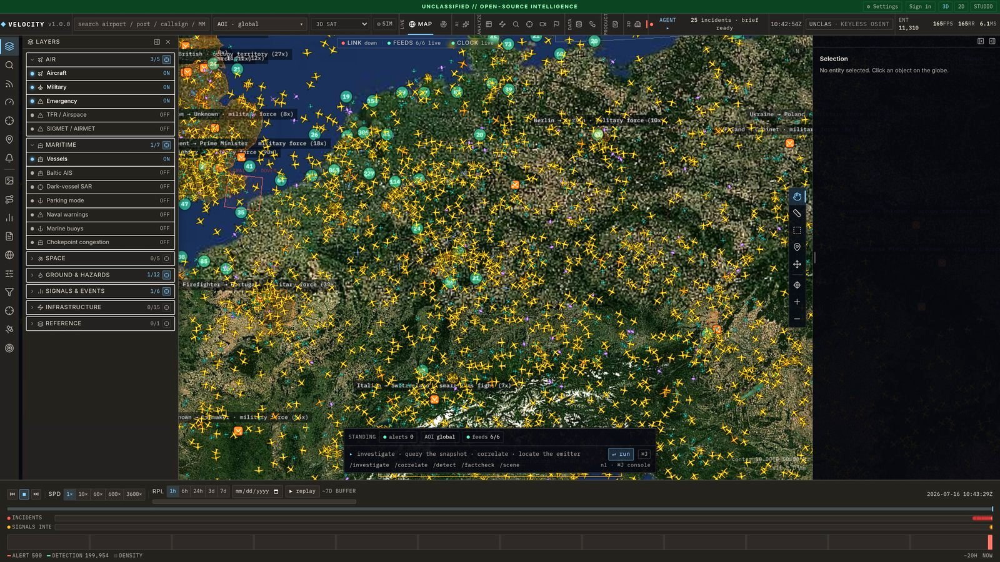
Turn on the archive profile and Velocity records position history to your disk, with a scrubber to rewind any layer to any past moment. No account to close, no tier to cut, no API to sunset.
| Tracker | Replayable history, free tier | Archive owner |
|---|---|---|
| Velocity | Bounded by your disk, scrubbable to any moment | You |
| Flightradar24 | 7 days | Them |
| MarineTraffic | 24 hours, down from 72 | Them |
| ADS-B Exchange | Free API tier discontinued | Them |
Free tiers as of July 2026, each checkable on the vendors' own pricing pages. Live coverage is similar community feeder data everywhere. The paywall is the history.
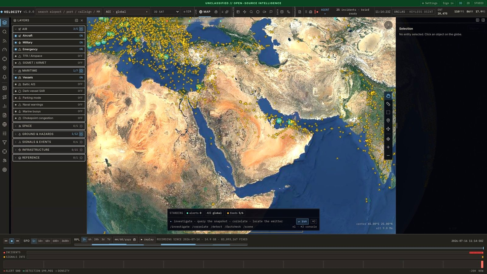
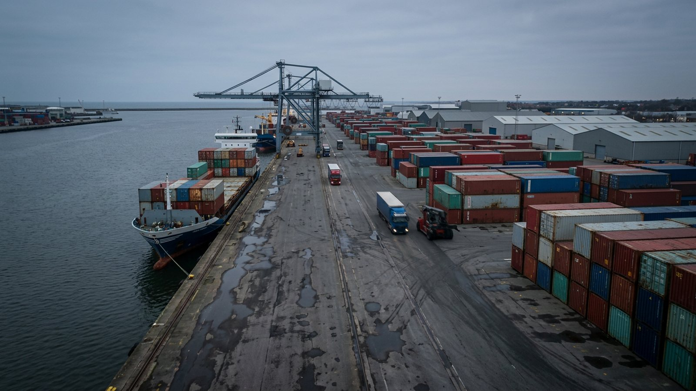
Once a finding matters, it has to survive scrutiny. The evidence locker keeps a chain of custody from first capture to final document.
Freeze a URL, an upload or a live feed slice the moment you see it.
sha256(capture)
Every capture is hashed into an append-only custody log. Nothing edits history; corrections append.
custody.log · append-only
A case rolls up into a self-contained HTML or PPTX report where every claim carries its provenance.
report.html · report.pptx
Velocity runs as an MCP server with 46 tools, so an AI agent queries the live feeds instead of guessing from its training cutoff. Everything it returns is labelled as automated output, never sold as insight.
# real tool names, illustrative session > query_aircraft(lat=25.1, lon=55.3, radius_nm=150) > gps_jamming(detail="short") > query_vessels(lat=59.4, lon=24.7, radius_nm=90) > track_history(id="aircraft:ae1462") # served from your local archive, # labelled as automated output
The globe is the front door. Behind it: entity search, graph analysis, case files, data pipelines and automation over the same live substrate. Six of the twelve below; the README tour walks all of them.
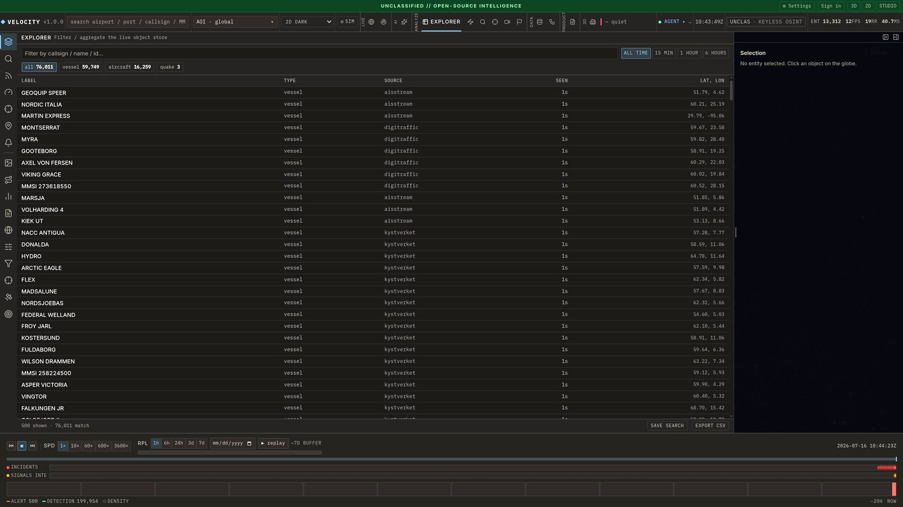
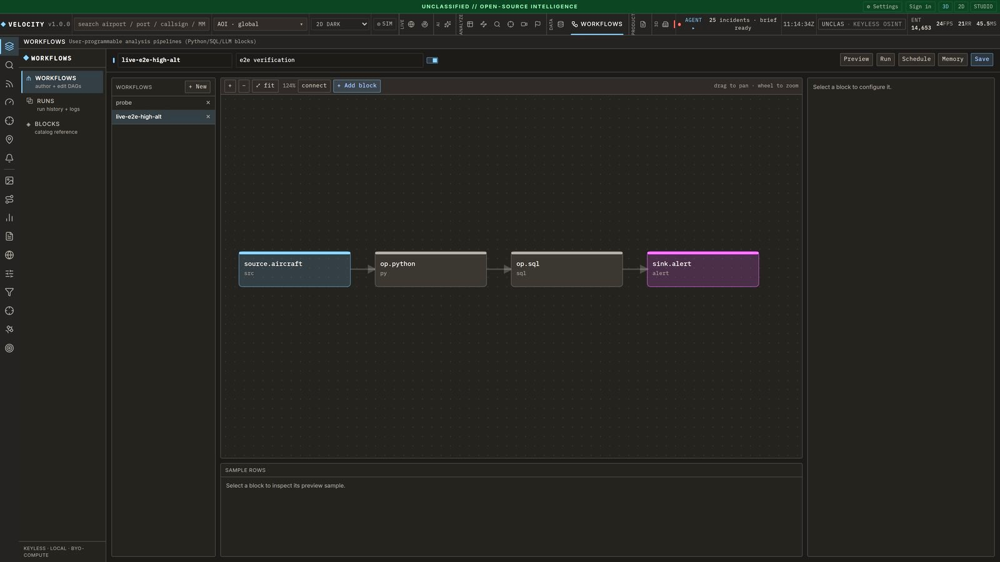
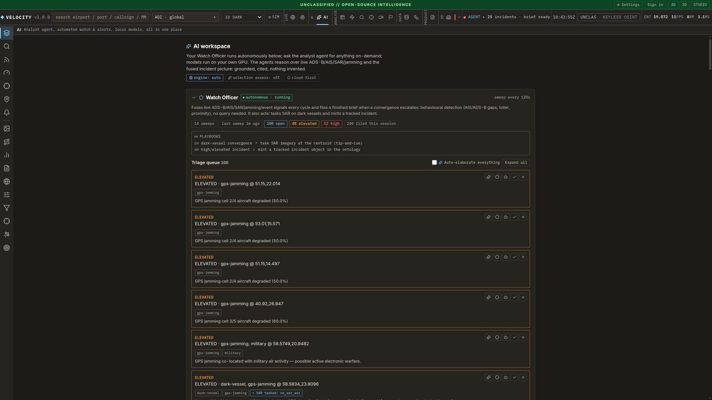
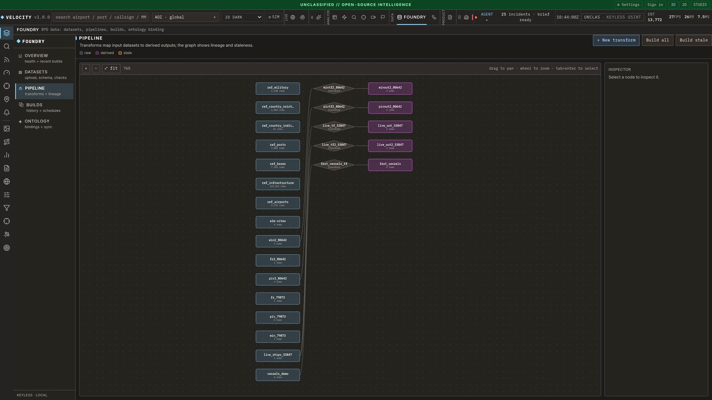
Trust in a tool like this comes from knowing where its edges are. These are stated in the README and enforced in tests.
Aircraft jump to real received fixes by default. Predicted motion exists, but it is opt-in, analytic and clearly a model, because only 13.5% of velocity fits survive contact with the next fix.
Dense over Europe and North America, thin over oceans and conflict zones. AIS is strongest in Northern Europe. The map shows what receivers hear, and that is stated.
Derived state like incident lists clears on restart. What you deliberately keep persists: the position archive, case files and the custody log.
Community feeder terms do not allow public redistribution, so there is no demo instance to click. You run it, it is yours. That is the point.
No. Aircraft, vessels, satellites, earthquakes and the basemap all work keyless out of the box. A few optional layers, like NASA FIRMS wildfires, unlock more with a free key and degrade gracefully without one.
Any machine that runs Docker handles the backend. The 3D globe holds 60 fps with around 15,000 aircraft on the desktop RTX card it was measured on; the satellite layer is the hungriest. There is a 2D mode for modest machines.
The feeds are public, volunteer-run aggregators of unencrypted broadcasts that aircraft and ships transmit by design. Each upstream's terms and rate limits are listed in the NOTICE file; your instance displays the data locally and never re-serves it publicly, which is also why there is no hosted demo. The disclaimer covers responsible use.
So improvements to a tool about transparency stay transparent. If you run a modified Velocity as a service, you share your changes. Private self-hosted use is unaffected. Some upstream feeds carry their own non-commercial terms, listed in the NOTICE file.
Full-breadth global recording measured around 3 GB an hour on a keyless box, so 48 hours of everything is roughly 150 GB. Out of the box a 2 GB byte cap binds first; raise it, or set ARCHIVE_MODE with a disk budget you choose. The scrubber always shows the actual depth you have, never a promise.
Live coverage is similar community data. The differences are fusion (ships, satellites, jamming and hazards on the same globe as aircraft), correlation on the server, the evidence locker, the MCP interface, and above all the archive: your replay window is your disk, not a subscription tier.
Docker Compose brings up the API, the web app and a proxy on port 8080. First data appears within a minute of boot.
Get started on GitHub$ git clone https://github.com/AndrewCTF/velocity.git $ cd velocity $ cp .env.example .env $ docker compose up # api + web + nginx on :8080 open http://localhost:8080